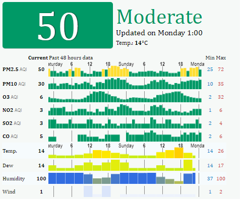
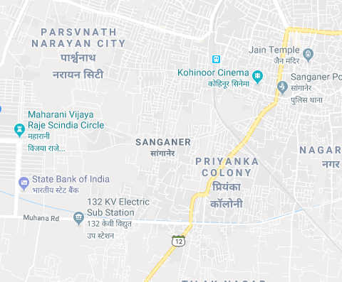

Good:-
1. preventions:-
As air quality is good , chances of diseases caused by air pollutants is less. so,there must be some common awareness to maintain this AQI.
These are:-
1.use public transport and car pool.
2.Maintain good indoor air quality.
3. Do not smoke indoors.
4.Fix water infiltration problems to prevent mould growth
5.Opt for healthy and environmentally friendly household products and materials
6.Limit the use of wood-burning appliances
2.Health effects:-
1.There will be no as such major disease but some common problems can initiate if it is not looked after like Asthma and other lungs problem.
2.The can be the risk of exposure to unhealthy levels of ground-level ozone.
3.During warmer months, Children, who often play outdoors in warmer
weather, are at risk.
3. WHAT CAN I DO?
1.Every time we drive to school, use our heater or air conditioner, clean our windows, or even style our hair, we make choices that affect air pollution. These steps, as well as many others, are things we all can do to help reduce air pollution.
2.Choose environmentally friendly cleaners.
3.Avoid excessive idling of your automobile.
#Moderate:-
1. Prevention:-
1.Avoid areas where the air is polluted.
2.Contribute to the reduction of outdoor air pollution.
3.Do not smoke indoors.
4.Fix water infiltration problems to prevent mould growth.
5.Opt for healthy and environmentally friendly household products and materials
6.Limit the use of wood-burning appliances.
7.Install a carbon monoxide detector, and avoid using appliances that operate on fuel (gasoline, propane, etc.) indoors
8.Measure the concentration of radon in your home with a dosimeter. You can do it yourself or hire an expert
9.Learn about the possible sources of asbestos in your home and take the appropriate precautions, especially if you are doing renovations
10.Opening your windows regularly is an inexpensive and effective measure. However, you should keep your windows shut when outdoor air quality is poor and during periods of extreme cold.
11.wear mask in highly polluted area by checking AQI from your phone.
2.Health effects:-
1.People who are unusually sensitive to ozone or particle pollution may experience respiratory symptoms.
2.The risk of exposure to unhealthy levels of ground-level ozone is greatest.
during warmer months. Children, who often play outdoors in warmer
weather, are at higher risk.
3. chances of asthma and other lungs diseases .
4. skin burn due to global warming.
5.Sensitive individuals will experience more serious conditions. The hearts and respiratory systems of healthy people may be affected.
3. WHAT CAN I DO?
-Participate in your local utility’s energy conservation programs.
-Limit driving by carpooling, using public transportation, biking and walking.
-Combine errands for fewer trips.
-Keep your automobile well tuned and maintained. Follow the manufacturer’s instructions on routine maintenance, such as changing the oil and filters, and checking tire pressure and wheel alignment.
-Avoid excessive idling of your automobile.
-Use electric or hand-powered lawn care equipment.
-Be careful not to spill gasoline when filling up your car or gasoline powered lawn and garden equipment.
-Run dishwashers and clothes washers only when full.
-Choose environmentally friendly cleaners.
-Use water-based or solvent free paints whenever possible and buy products that say "low VOC".